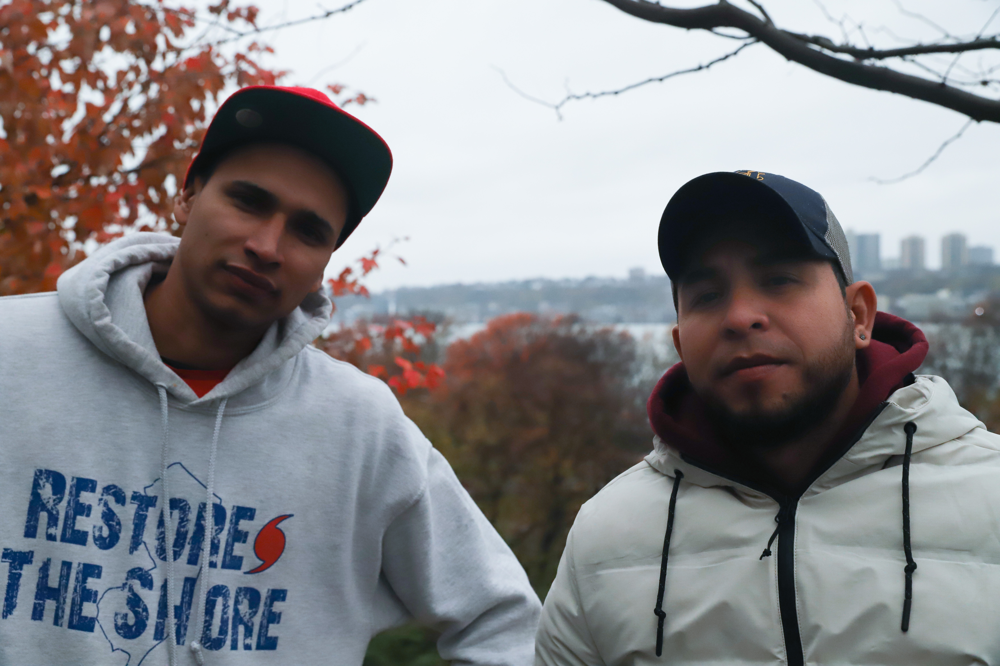
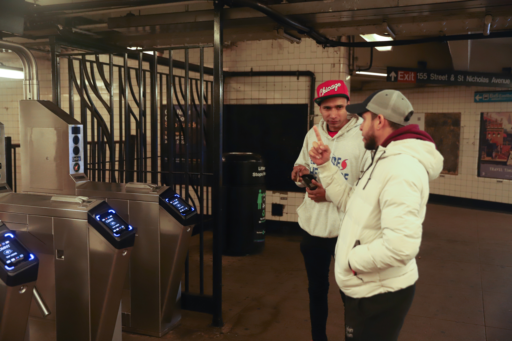
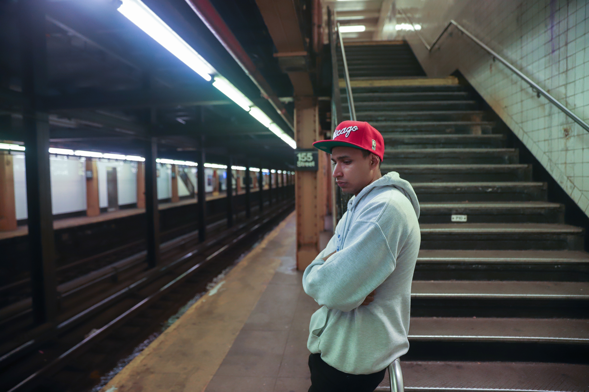

Carlos Niño holds his phone as it plays a video of his friend, Mauricio Hernández.
Without Mauro
They hoped to make it to the U.S. together. But one of them didn't, and his friends are dealing with his loss while they adjust to life in New York City.
B oth Tonny Tavera and Carlos Niño know how their friend, Mauricio Hernández, died. But neither can explain why it had to happen.
They had already endured harrowing moments on their 3000-plus-mile journey to the United States – sleeping outdoors in city streets, waking up soaking wet in dense forests, getting robbed, seeing the bodies of other people who had died along the way.
But, months later, it's not only those parts of their journey that stick with them. Their memories aren't only about struggling to make it to the U.S. – where they hoped to escape the economic and political turmoil in their home country of Venezuela.
"There are people you don't forget, you know?" said Tonny in October 2022, as he sat at a concrete table in a park in Bedford Stuyvesant, Brooklyn, a few blocks away from the 13th Regiment Armory shelter, where he had been assigned by New York City social services agencies.
"Because when you find a way to guerrear – and when I say guerrear" – he explained, speaking Spanish – "[I mean] we help each other. If I don’t have something, you don’t; if I don’t eat, you don’t eat," he said, "you start getting more attached to them."
Tonny and Carlos had become attached to Mauricio Hernández, who drowned in the Rio Grande in the summer of 2022 at age 23. He had traveled alongside them for part of their journey from Colombia, where they had all met before they left. They split from each other partway through, for financial reasons, with the plan to reunite right before they crossed into the U.S. Even when they were apart, they’d been in constant contact, making sure to check in on one another along the way.
Indeed, they were all in touch up until Mauricio’s death, about which Carlos and Tony would find out when they were still on their journey, with over a thousand miles left to go.
Now that they've arrived in the U.S., Tonny and Carlos are looking back on the moments they experienced on that journey – including finding out about the loss of their friend. As they face the opportunities and challenges that come with living in a new country, they're coming to terms with the fact that Mauricio never will do the same.
***

Carlos Niño and Tonny Tavera in Riverside Park, New York City, November 2022.
T onny, age 34, and Carlos, age 29, arrived in New York City from the U.S.-Mexico border in early October 2022 with few places to stay. They were two of over 4,000 migrants who had arrived in the city since the beginning of the summer. Like many – though not all – of the others, they had come via a government-chartered bus sent by Texas Governor Gregg Abbot.
Carlos spent his first night in a city shelter not far from the bus terminal, and city officials soon found him space in longer-term housing on Randall’s Island, a hard-to-access expanse of athletic fields and municipal facilities at the intersection of the rivers and waterways that run between Manhattan and Queens.
Less than two weeks after he arrived in the city, he sat on a curb outside Schwarz Assessment Shelter, one of several shelters on the island that had been accommodating migrants. He’d been scrolling on his phone, but put it down as he began talking.
"Es fuerte," he said – it's intense – "because just before we left, we told each other we'd meet up in New York… and be around all the screens [of Times Square], taking photos" he said. "And knowing he's not here is really sad. It's really sad."
The economic and political crisis that pushed them all out of their home country began to take shape after a different life ended: that of Hugo Chavez in 2013. After the leader, who had led the country for more than a decade, died at age 58, Venezuela faced a series of questions about its next steps. Chavez’s vice president, Nicolás Maduro, stepped in to fill the position, and soon took power in a disputed election that triggered protests and a constitutional crisis. Legislators and the courts tried to resolve it, but the situation remained turbulent. Meanwhile, shocks to the country’s petroleum-based economy brought extreme inflation, goods shortages, and eventual food scarcity and medicine shortages. Popular protests resulted in crackdowns on political opposition, and an increasing number of human rights abuses have come from organized crime and corruption.
With mounting economic and political strife, a mass exodus of Venezuelans fled into neighboring Colombia. Since the crisis began, the U.N. estimates that approximately 7 million people have left Venezuela for countries all over the world.
Like many of their compatriots, Carlos and Tonny were swept up in the country’s political and economic turmoil.
For Tonny, the pressure to leave was economic. Born in Caracas in the late 1980s as the youngest of ten brothers and sisters between both his parents, he worked with his father in construction as a child before finding a job in a jeans factory at age 17. He quickly worked his way up, becoming a supervisor at age 18. At 21, he became acquainted with the president of a government-run food processing company, called Indústrias Dianas, who helped him land a job in the factory offices. But several years later, after Chavez died, the country’s deteriorating economy led to salary cuts that soon pushed him out. After a few years working in a shoe shop, he eventually decided to move to Colombia to better support his parents and siblings. To raise money for his trip, he started an ice cream business out of his home, using recipes from his mother to sell flavors like chocolate and coconut.
Eventually, he made enough cash to make the trip to Medellín, Colombia’s second-largest city. But he didn't have enough to last for long. Within several days, he had to ask people in the streets to get enough money to survive. A woman who volunteered with Venezuelan migrants eventually helped him secure a job in a coffee plantation. That’s where he met Carlos, who had moved there from his own hometown on the other side of Venezuela from Caracas.
Carlos’s reasons to leave home were different. Growing up in the small mountainous city of San Cristobál, not far from Venezuela’s western border, he had already completed a round of military service in his early 20s. However, when Nicolás Maduro came into office, his government expected Carlos to sign up again. He wasn’t ready to follow their orders, which, he said, could involve shooting people in village streets. "I wasn’t going to arrange my life – or that of my town – at the president’s fancy,” he said.
After he left, the military came looking for him in his mother’s house, and went to places he’d previously worked to try to track him down. Eventually, his mother and sister migrated to Colombia as well. Meanwhile, Tonny, who was tired of being stuck in the mountains with mosquitos, left the coffee plantation to work at tourist resorts in Ecuador, where a few of his cousins lived. He eventually made his way back to Medellín and took a job in a large company that made plastic silverware, bags, and cups.
There, he met Mauricio Hernández. They hadn’t paid much attention to each other before, but one day, Mauricio came up to him and joked about having a crush on a coworker. Tonny was quickly amused by Mauricio’s humor and how he had picked up Colombian slang – like the word carechimba – which translates directly to a vulgarity but that Mauricio used as a term of endearment. Mauricio and Tonny soon started hanging out, spending time at each other’s houses and wandering around town when they weren’t working.
Around that same time, Tonny had also started vocalizing his plans to come to the U.S. “I’d always had it in my mind to come here,” he said. Hearing this, Mauricio got excited about the possibility of new prospects and wanted to come too. Though Tonny didn’t know much about Mauricio’s past life, he knew he had a two-year-old daughter back home in Venezuela. He often talked with his daughter and her mother, both of whom were still there. Tonny said that helping both of them – but especially his daughter – have better lives was Mauricio’s primary motivation for coming to the U.S. “He was always attentive,” Tonny explained. “As a father…you have two lives – if it wasn’t for his family, I imagine he was also coming for himself – to get ahead,” he said. “That’s the goal we all have.”
They decided they’d make a bit more money at the factory, then Mauricio would stay at Tonny’s place for a week to save money on rent.
Carlos, who had kept in contact with Tonny since their time on the coffee plantation, had also decided to make the trip to the U.S. But it wasn’t as easy for Carlos to make the decision to leave.
He walked back on the decision several times which disrupted the group’s plans. But the others kept encouraging him. Eventually, “we got ready [and] left,” he said, “without looking back.”
To make it official, a few days before they left, Carlos, Tonny, Mauro (how Carlos and Tonny called him) and two other friends who had decided to join them – Àngel and Gregory – threw a party at Tonny’s place in Medellín. A video on Tonny’s phone captured a moment from that time. A shaky camera shows a living room with sun shining through a sliding glass door and bottles on a coffee table in the background. Tonny holds the phone, laughing and singing loudly as merengue music plays from a speaker in the background. Mauricio, a young man with a narrow face and dark hair, wearing a bright red shirt, looks at the camera over Tonny’s shoulder and gives a slight smile.
***

Tonny Tavera (right) gives directions to Carlos Niño in the 155th Street subway station in New York City in November 2022. During their journey to the U.S., Tonny saw himself as the group's unofficial guide.
T he over-land distance between the city of Medellín, where Tonny, Carlos, and Mauro all met, and the southern border of the United States is over 3,000 miles. It begins with the strip of land that divides the Americas – starting at the northern border of Colombia and the southern end of Panama. Filled with craggy mountains, dense rainforests, and turbulent rivers, the landscape is rain-soaked and rugged. Several attempts to build a road through it – proposed as the final stretch of the “Pan-American Highway” – have failed. That leaves a 68-mile section, impassable by cars or other vehicles.
Called the “Darien Gap”, it’s known as one of the most remote – and dangerous – parts of the world. Drug cartels and organized crime groups control most of the territory; human smugglers operate with little control by authorities, and natural hazards like floods, mudslides, and wild animals pose risks to the people who travel through. Those who have the cash to buy plane tickets can skip over some or all of it, but in the past year alone, over 150,000 people made the trip across the gap by foot. Not all of them are Venezuelan or even from South America – a large number also come from countries as far away as Cameroon, Pakistan, and Bangladesh.
For the five Venezuelans that set out from Medellín – Tonny, Carlos, Mauricio, and their two friends Gregory and Àngel – the 10-day trip through the Darién was arduous and intense. They began the section on July 6, 2022 – Carlos remembered the date because it was his brother’s birthday. From there, they entered what Carlos called “La Carretera Negra”, or “black highway” – a principal route people follow to get through the region.
Along the way, Tonny said he felt like the group’s guide. “I don’t know if it was because I was the oldest, or because I was the most direct – but I scolded them as if they were my children,” he said.
After they started their journey from the remote village of Capurganá, at Colombia's far northern coast, the five of them found themselves traveling through dense forests, camping along rivers, and walking for long hours.
Tonny described a moment where Mauricio got separated from him and the others. They were at a river crossing and had to hold onto each other’s hands to stay steady as they crossed through the rushing water. Everyone expected Mauricio to follow along, but when they arrived at the other side, he was gone. For over an hour, the group waited for him, and Tonny became worried. He started to reprimand the group, worried that Mauricio had been captured, kidnapped, or killed. Everyone climbed to the top of a hill to try to spot him, but couldn’t.
“We started to get desperate, because no one knew what happened to him,” Tonny recalled.
Around an hour and a half later, another group arrived, and they spotted Mauricio among them. He told Tonny and the others that he hadn’t thought it was possible to cross the river at that location. He’d stayed on the other side of the river, found a crossing further down, and didn't cross until he found the group to go with him. "Thinking back on it now, I realize he must have been afraid of the river," Tonny said.
When he reunited with Mauricio, Tonny was relieved.
“I hugged him, of course,” he said. “And then I yelled at him.”
Along the way, their group also shared moments of bonding. The five of them helped each other – they were like a family, Carlos explained. They bathed together, cooked together, ate together, and changed clothes in front of each other. “If one of us ate, the other one ate too,” he said, and it was true the other way around. “If one of us didn’t eat, no one else would eat,” he said. "We’d keep helping each other…we were brothers.”
Through it all, Mauricio never complained, they said. Siempre alegre. That’s how he was. Always happy. “In the rainforest – we’d fall, and we’d laugh,” Carlos said. “When [Mauricio] would fall, we’d laugh and keep going. It was a moment of companionship, of good friendship.”
"'Que viva el amor–' he'd say that all the time," Carlos said. "'Que viva el amor.'" Let love live.
On July 16, 2022 – ten days after they entered the Darien Gap, but only having traveled less than 100 miles out of their 3,000 mile journey, they made it through.
As they continued to travel through the mountains of Panama and into Costa Rica, Tonny and Carlos were out of cash. They could stay at shelters for free if they did tasks like cleaning bathrooms or taking out the trash.
But at that point, at the direction of immigration authorities, the group split up. Carlos and Tonny went to one shelter, while Mauricio and Àngel, their other friend, went to another. Tonny and Carlos didn't know exactly when they'd see Mauricio and Àngel again, but they weren't expecting to be apart for long.
"We always kept in contact, but since that day – I don't have the dates – we didn't see each other in person," Tonny said.
***

Carlos Niño waits for a subway train in Mahattan, New York City, in November 2022.
F rom Panama, they were still over 2,000 miles from the U.S. border; first they’d have to get to Costa Rica, and then through Mexico. Neither Tonny nor Carlos remember the details of their trip through Central America. As they traveled, they worked odd jobs, asked strangers for cash, and slept in shelters along the way. Àngel and Mauricio were ahead of Tonny and Carlos by about "half a country", as they explained. While one set of travelers stayed in one small country's capital, the others had just crossed the border into the next country. Through voice messages and videos, they knew Àngel and Mauricio were slightly ahead. The two had already crossed into Mexico when Tonny and Carlos were still about a day's trip behind – in Nicaragua, Honduras, and Guatemala.
A video saved on Carlos’s phone shows Maurico holding the camera above himself, speaking to the camera, with the narrow streets and brightly-colored buildings of Mexico City in the background. Mauricio had sent it soon after he had crossed the border into Mexico, while Tonny and Carlos were still somewhere in Central America – they don't remember exactly where.
Several days later, Tonny heard from Àngel that he and Mauricio had made it into northern Mexico. They were planning to take a train between Monterrey – several hundred miles south of the border with the US – to Piedras Negras, just across the Rio Grande from Texas.
Tonny told them to not wait – "'go,' we told them, 'go'" – and that soon they would reunite.
"[We’re] going to celebrate that we made it," Carlos said.
Before Mauricio and Àngel got on the train, however, they separated. Through Àngel, Tonny found out that Mauricio had decided to board the train with another acquaintance they had bumped into. So Mauricio kept going towards Piedras Negras – the town near the border crossing – while Àngel stayed behind.
They received a video from Àngel of Mauricio waving from the train.
"After that, we didn't hear anything more," Tonny said.
Days passed, and no word came from either Mauricio or Àngel. Carlos and Tonny started getting worried. They had heard rumors of organized crime groups roaming the trains and attacking migrants. They started to wonder if something bad had happened.
"We didn't know anything, because that train is dangerous," Tonny said.
Eventually, Àngel got back in contact, but he had no news of Mauricio either. Àngel hadn't crossed the border yet and wasn't sure if Mauricio had or not.
At that time, Tonny and Carlos were hundreds of miles away, finally about to cross Mexico's southern border. As soon as they came into the country, Mexican immigration authorities briefly detained them – a standard practice for most migrants entering at the southern border. They released Tonny before Carlos, so Tonny went to the nearby village of Arriaga to wait. Carlos would get out of detention the following morning, and they planned to reunite then.
Tonny, staying the night in the village at the far southern end of Mexico, scrolled through Facebook, looking for news of Mauricio. He saw that the acquaintance who had been traveling alongside Mauricio was online. So he messaged him.
"'Verga, chamo,'" – fuck, dude – "with those same words,” Tony recalled. “You got through, and you’re not able to tell me, ‘Tonny, I made it?’ Why? What happened?’"
The acquaintance, who had just crossed into the U.S., responded that he had bad news.
They had started sending voice messages back and forth over Messenger. When Tonny asked what happened, he recalled, the man on the other end replied:
“‘Mauro is dead.’”
At first, Tonny thought it was a joke. He tried to get the man near the border to pass the phone to Mauricio. But he didn’t.
Then Tonny heard the words, “Mauro drowned.”
He asked for details.
According to those who had been there with Mauricio – and were now on the other end of the call – the group was crossing the Rio Grande at the point between Piedras Negras, Mexico and Eagle Pass – on the Texas side of the river’s bank. But the current was high. Mauricio found himself being swept away by the water.
Those traveling with Mauricio told Tonny that they tried to do everything they could to save Mauricio, but to save themselves, couldn’t. In his desperation, Mauricio was pulling them under, Tonny recalled being told. “They said, ‘we did everything we could.’”
A man in their group tore off running to look for the police or immigration officials for help, but, they told Tonny, the river had already taken Mauricio.
Tonny called Carlos immediately to tell him the news. Carlos, who had just gotten out of detention and was on his way to meet up with Tonny, didn’t remember where he was at the exact moment he found out. But he remembered the shock.
“How could it be that Mauro drowned?” he recalled thinking. “I was sitting there, like, without words.” As he described the moment, he clutched his heart. He called their other friend, Àngel, to confirm it. And that’s when he knew.
“And I started to cry. The tears fell. Just like that, the tears fell,” he said.
When Carlos and their other friend arrived at the place Tonny was staying, Tonny remembers lying on the floor, crying, as they reunited.
“And what I did was give them a hug,” he said. “And all the desire to leave left us.”
***

Carlos Niño sits in a subway car while using his cell phone. He and his friends kept in contact throughout their journey via Whatsapp and Facebook messages.
F or days after receiving the news of Mauricio's death in late August 2022, Carlos, Tonny, and their friend Gregory stayed in Arriaga, along the Pacific coast of southern Mexico. They didn't want to do anything. As they stayed there, they started to question whether to even continue with their trip.
"We just felt deflated," Carlos said. "We didn’t want to keep going...we left the five of us, and we wanted to arrive as the five of us," he said.
With over 1,200 miles to go to the border, the three of them eventually decided to keep moving forward, knowing they’d have to separate again. With little money left, they’d each have to go at different paces depending on how much cash they’d be able to scrape together. Carlos stayed in southern Mexico for an extra week while Tonny and Gregory went ahead. Then Tonny and Gregory separated as well, and eventually Carlos overtook them both.
It took them over a month to get through Mexico, as they each worked odd jobs and asked for money in the streets. They had received permission to stay in the country for eight days only, so every day they stayed after that was a risk. Along the way, they also had to evade Mexican immigration authorities, who would deport them at a moment's notice if they were caught.
As they each made their way toward the border, staying in contact, they planned how they would remember Mauricio when they crossed the border. One of them had the idea to drop a rose for him in the river that swept him away.
"We’d put it in a bottle and throw it in," Carlos said. "It would go down the river in his name."
But they didn't get that opportunity. Even a fake rose was hard to find, Carlos recalled, since they were constantly on the run.
"You’d go inside a store and always be on the lookout, because immigration [enforcement] was all around," he said.
By the time they got to Ciudad Juarez, at Mexico's northern border with the US, they had to move fast. They each crossed the river – which was dry at that location – while trying to avoid Mexican immigration officials. As Tonny crossed into El Paso, Texas, the rose came into his mind.
"And the tears started to fall," Tonny said. "We never were able to do that…but I always remembered."
***

Tonny Tavera records a voice message on his phone near Bryant Park, New York City, in December 2022.
T onny and Carlos arrived in the United States a few days apart. Carlos remembers his entry date as September 20, and Tonny estimates that he came a few days later – although he doesn’t remember the exact date and doesn't have the paperwork. They said they were each processed by U.S. immigration officials and released within a day.
They were two of a total of 227,547 migrants who came in contact with U.S. Customs and Border Protection (CPB) officers that month. The total number of migrant encounters in 2022 surpassed 2 million in September, with over 187,000 coming from Venezuela.
After he was released by U.S. border officials, Carlos said he was given the option to either board a government-chartered bus to Chicago or to New York. He chose to come to New York because he'd always heard of it growing up.
"I liked it. In school, in novels, in films, they were always about Hollywood or New York," he said. "So the [film] screens called me," he said. "I said to Tonny, 'Come to New York. I'm going to be here.'"
Tonny agreed.
"So I came to New York too," he said.
After a three-day bus ride each, they found themselves in shelters in different parts of the city – Tonny in Brooklyn and Carlos on Randall's Island. Tonny, who was initially sent to the 13th Regiment Armory Shelter, said he was surprised by the number of people who had psychological problems, and said he often felt afraid of them. The shelter kept the lights on throughout the night, and people put up makeshift tents made of sheets. At one point, he said another shelter resident pretended to attack him when he woke up to go to the bathroom early one morning.
In early November 2022, both were transferred to different locations with no warning – Carlos to a shelter in the South Bronx and Tonny to a hotel in Hamilton Heights. Neither said they knew why or how they were moved – only that shelter officials told them to pack their things and get into a bus. The move came as the New York City Mayor's Office continues to try to find space for the large number of migrants who have come to New York this year, many of whom, like Carlos and Tonny, don't have friends or family in the city to stay with.
Tonny said he is still waiting for his work permit to come through, and is not sure yet where he'll find a job. He’s in contact with some organizations who are helping him arrange more permanent housing, and once he has that, it'll be easier for him to apply. Carlos, who doesn't have a permit, explained that a friend of his helped him find an under-the-table job as a custodian in the offices of a cookie factory in New Jersey. He said his bosses told him that if the authorities find out he's working there, he could lose his job and possibly be deported.
Both spend a lot of time on their phones – sending voice messages, photos, and videos to family and friends back home. Carlos listens to Spanish-language Christian music on his earphones ("it helps me feel closer to God," he said). Tonny loves dancing – he's gone out dancing in Queens, and though his favorite is Salsa, he just loves it in general. ("I'll dance to anything," he joked. "I'll dance to propaganda!"). In the fall of 2022, they were both anticipating the first snowfall – wondering when it would happen and what it will be like – neither had seen snow before.
For them both, their dream is to earn enough money to support their families in Venezuela and potentially be able to return if the situation improves. Although they say the U.S. has been well-organized and welcoming overall, they don't intend to spend their entire lives here. Tonny said he has always wanted to come to the U.S., but he also said he eventually would find his way back home.
"If the situation in Venezuela improved," he said, "I'd go across the Darien [Gap] tomorrow."
***

Tonny Tavera sits in Times Square in Manhattan, New York City, in December 2022.
O n a wet evening in late November 2022, Carlos and Tonny sat in Riverside Park on a bench overlooking the Hudson, a short walk from Tonny's hotel. They described their trip, as well as their memories of Mauricio. They both said they think of Maurico every day.
“I’m not going to be able to say, ‘No, I’m not going to think of him anymore,” Carlos said. “I think of him, and he’s always there … The people who die don’t leave. Only the people who are forgotten."
Tonny agreed.
"You know, I’m always carrying him in myself…he’s always here," he said, pointing to his heart.
He continued: "I’ve always asked myself, ‘what happened?’ ‘why?’ I never would have expected [Mauricio’s death]. Never.”
"Sometimes you ask yourself questions that you don’t know. I mean, like, how do these things happen? The only one who knows is God," he said.
After a pause, he sighed.
"Pero bueno." Well, anyway. "Things happen for some reason. And if God wanted it like that, what else –”
His voice broke, and he hung his head. Tears flowed down his face as he sat on the back of the wooden bench and the yellow street lamps cast a shadow under his blue-and-gray baseball cap.
Carlos stood next to him and put his arms around him. They stayed there in silence for a long time.
******
Austin Cope is a graduate of the international reporting concentration at the Craig Newmark Graduate School of Journalism at CUNY. He wrote and reported this story from New York City.
See more work by Austin Cope here.
******
Background (illustration): The Rio Grande at Eagle Pass, Texas, in 2008. Original photo by Billy Hathorn.